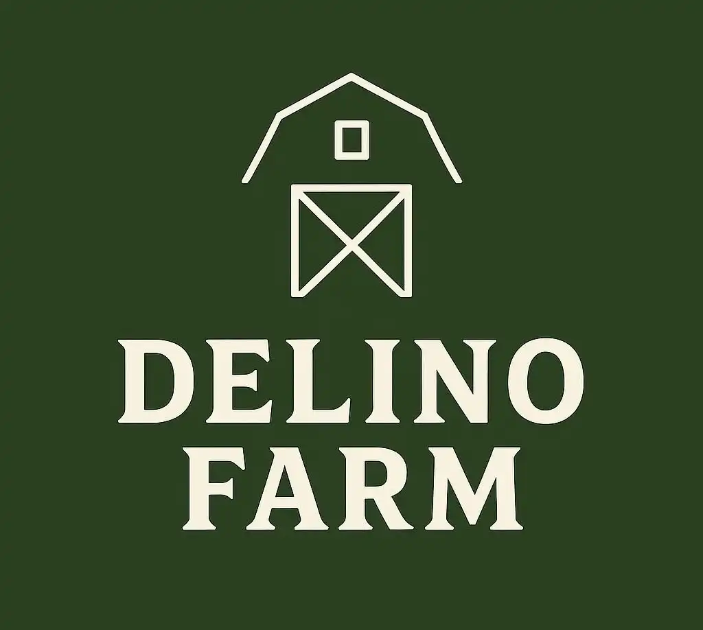
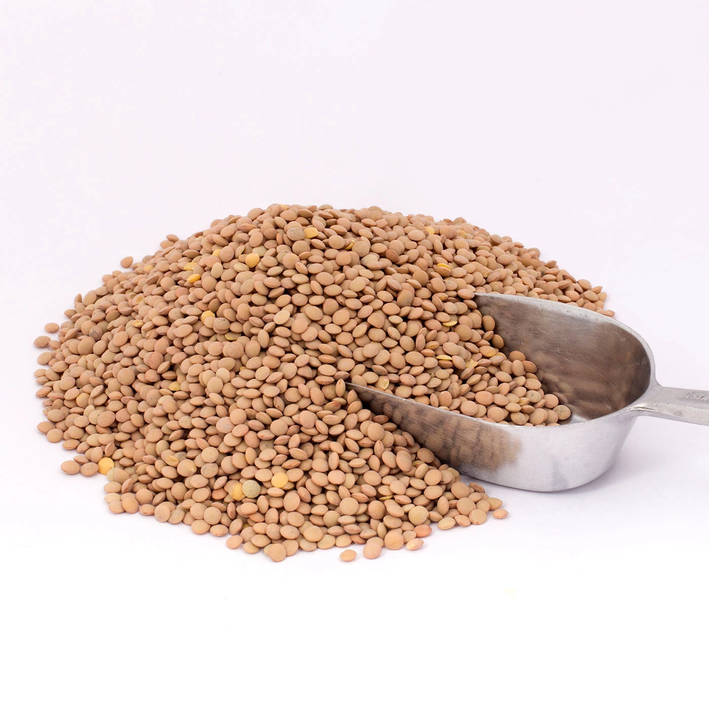

Αρχική
Η Ιστορία μας
Τα Προϊόντα μας
Δραστηριότητες
Επικοινωνία
Αρχική
Η Ιστορία μας
Τα Προϊόντα μας
Δραστηριότητες
Επικοινωνία
Φακές

Οι fahκες μας ειναι μαζεμένες...
Συνταγή για βραστές φακές
Υλικά
500 gr φακές
100 ml λάδι
1 κρεμμύδι
1 καρότο
Εκτέλεση
Βήμα 1:
Ξεπλένουμε τις φακές με κρύο νερό και τις σουρώνουμε καλά.
Βήμα 2:
Τοποθετούμε μία μεγάλη κατσαρόλα σε μέτρια φωτιά. Χοντροκόβουμε το κρεμμύδι και το ρίχνουμε στην κατσαρόλα με το ελαιόλαδο.
Βήμα 3:
Κόβουμε σε μικρές φέτες τα καρότα και το κρεμμύδι, τα ρίχνουμε στην κατσαρόλα και σοτάρουμε για 3-5 λεπτά μέχρι να μαλακώσουν.
Βήμα 3:
Ρίχνουμε τις φακές, κλείνουμε το καπάκι και σιγοβράζουμε για 40-45 λεπτά σε μέτρια προς χαμηλή φωτιά.